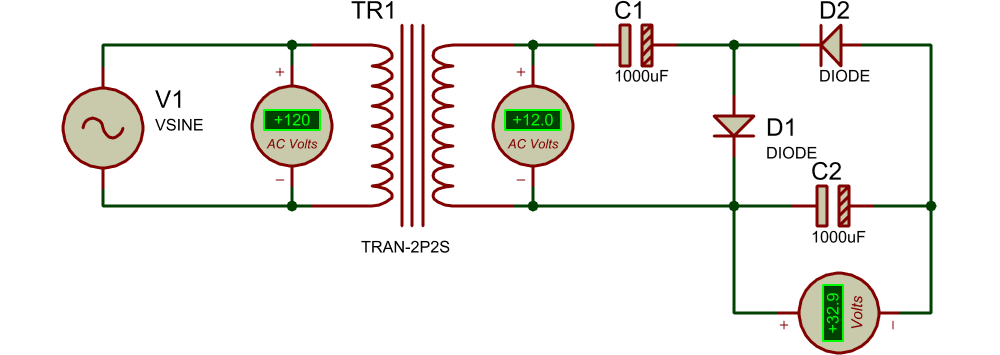
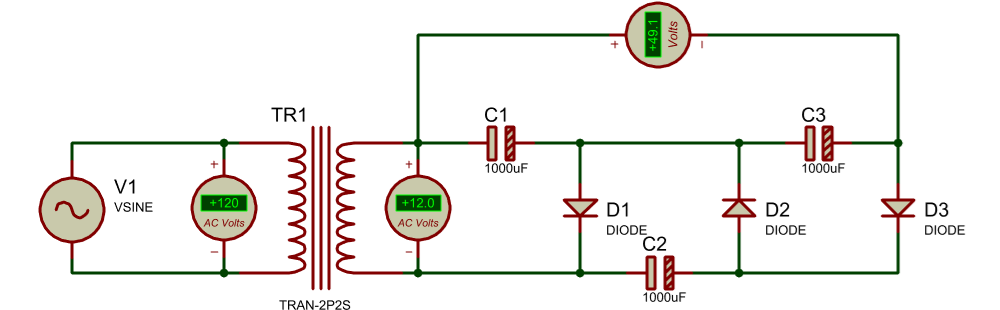
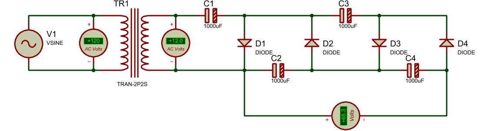

2.3 Multiplicadores de voltaje
2.3.1 Duplicador de voltaje

Durante el primer semiciclo (+) de la fuente D1 conduce mientras D2 está en corte, cargando C1 al voltaje Vmax.
Durante el semiciclo negativo D1 entra en corte mientras D2 conduce, cargando C2 al doble de Vmax.
2.3.2 Triplicador de voltaje

2.3.3 Cuadruplicador de voltaje
